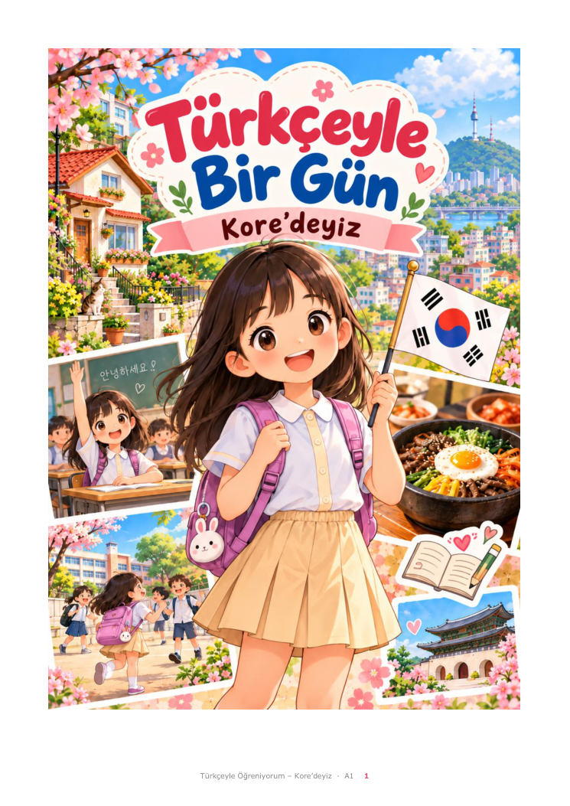

Türkçeyle Bir Gün · Kore'deyiz
A1 · Etkileşimli çalışma kitabı

Kutuları doğrudan işaretleyebilir, boşluklara yazabilirsin. Büyük-küçük harf ve sondaki noktalama puanı etkilemez. Dil bilgisi ekleri ve soru parçacıkları önemlidir. Açık uçlu görevler öğretmen değerlendirmesine bırakılmıştır. Cevaplar yalnızca bu cihazın tarayıcısında saklanır.